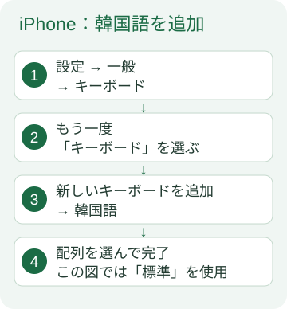
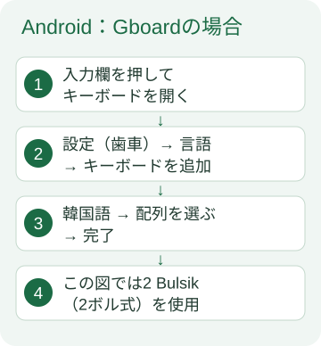
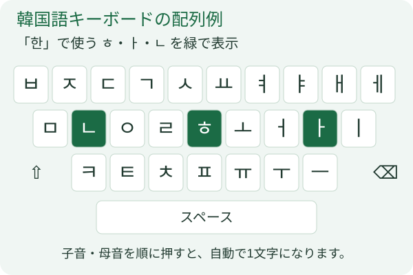
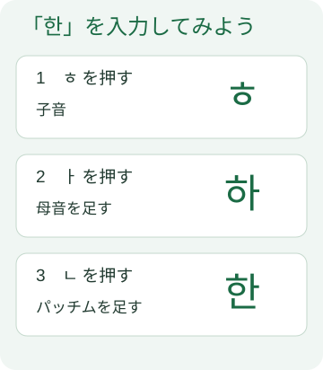

スマホで聞いて、話そう
3ヶ月でレベルアップ 韓国語 スポーツ編
学習を始める
各項目は見出しを押すと開き、もう一度押すと閉じます。必要な項目だけ開いて学習できます。
- 学ぶ課を選び、Step 1「本文を聞いて、読む」を開いて「通し再生」を押します。
- わからないところは「和訳を表示」で確認します。セリフを押すと、その部分を再生できます。
- 「セリフずつ（間あり）」で、音声に続けて声に出しましょう。速さを変えることもできます。
- 会話の第1〜8課では、練習したい役を選んで「役割練習」を押します。「あなたの番」に、自分で話します。
- 語彙・文法、シャドーイング、ディクテーションで復習し、最後に「完了」を押します。
ハングルを入力する
最初に韓国語キーボードを追加します。スマホ全体の表示言語を変える必要はありません。
以下は操作を説明する図です。実際の画面・名称は機種やOSによって異なります。
1. iPhoneで追加する
- 「設定」→「一般」→「キーボード」を開きます。
- 「キーボード」→「新しいキーボードを追加」→「韓国語」を選びます。
- 配列の選択画面が出たら「標準」を選び、完了します。

2. Androidで追加する
Gboard（Googleのキーボード）の例です。別のキーボードを使っている場合は、その設定の「言語」から韓国語を追加します。
- 入力欄を押してキーボードを開き、設定の歯車を押します。見つからないときは、スマホの設定で「Gboard」を検索します。
- 「言語」→「キーボードを追加」→「韓国語」を選びます。
- この説明と同じ配列にする場合は「2 Bulsik（2ボル式）」を選び、「完了」を押します。

3. 子音 → 母音 → パッチムの順に押す
ローマ字ではなく、ハングルのキーを押します。文字は自動で組み合わさるので、1文字ごとに変換ボタンを押す必要はありません。


- 한국：ㅎ → ㅏ → ㄴ → ㄱ → ㅜ → ㄱ
- 축구：ㅊ → ㅜ → ㄱ → ㄱ → ㅜ
- 아：ㅇ → ㅏ。母音から始まる音も、最初に ㅇ を押します。
単語の区切りはスペース。間違えたら削除キー（⌫）で戻します。ㄲ・ㄸ・ㅃ・ㅆ・ㅉ はシフト（⇧）を押して選べます。
このお試し欄は採点・保存しません。入力できたら、各課の語彙・文法・書き取りに進みましょう。
ホーム画面に追加
iPhone・iPad：Safariでアプリを開き、共有メニューから「ホーム画面に追加」を選びます。
Android：Chromeでアプリを開き、メニューから「ホーム画面に追加」または「アプリをインストール」を選びます。表示名は端末によって異なります。
音声と学習記録
初回はインターネットに接続して開いてください。ブラウザがアプリと音声の保存を完了すると、オフラインでも利用できます。端末の空き容量やブラウザ設定により保存内容が削除されることがあります。
チェックや書き取りは、その端末のブラウザ内に保存されます。別の端末やブラウザとの同期、先生への自動送信はありません。プライベートブラウズは使わず、設定の「学習記録を書き出す」で必要な記録を保存してください。
音声が出ないときは、メディア音量・イヤホンの接続先を確認し、再生ボタンをもう一度押してください。
学習を始める →